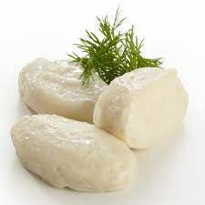

Fiskeboller er en vanlig matrett i Norge. Fiskebollene inneholder oppmalt fisk,
og vanligvis melk, potetmel og salt. De serveres gjerne med hvit saus,
det er også vanlig å bruke karri på, eller lage karrisaus.
Det er vanligst å servere fiskebollene med poteter, og kanskje grønnsaker
som raspede gulrøtter. Butterdeigskjell kan også serveres sammen med fiskebolleretten.
Små fiskeboller (suppeboller) er også vanlige i fiskesuppe.

Vil du se de andre varene i maten?
Klikk oppe i høyre da vel!